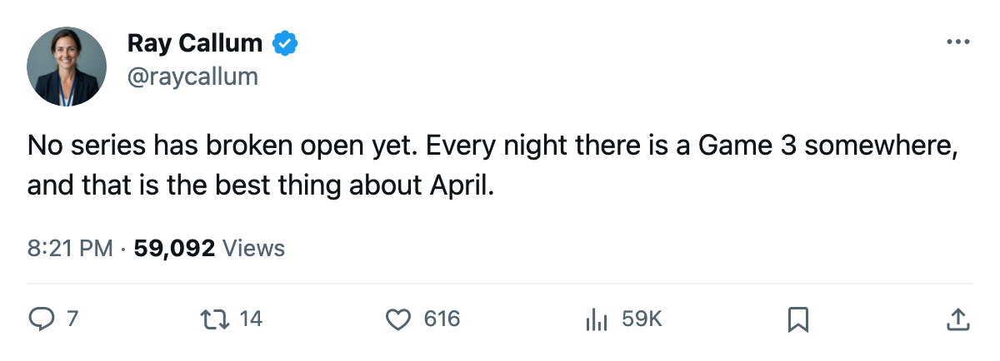

The Night Shift: Washington and Dallas are the only clubs at 2-0
Two clubs lead, four series are level, and four Game 3s land tonight.
 Ray CallumSenior correspondent · Home Ice Network
Ray CallumSenior correspondent · Home Ice Network
The piece
The first round has two games in all eight series and resumes tonight with four on the ice.  Washington Capitals and
Washington Capitals and  Dallas Stars are the only clubs at 2-0.
Dallas Stars are the only clubs at 2-0.
East: two seeds hold serve, two do not
 Toronto Maple Leafs 2,
Toronto Maple Leafs 2,  New York Islanders 0. Toronto won 3-1 on April 8 and 4-1 on April 10.
New York Islanders 0. Toronto won 3-1 on April 8 and 4-1 on April 10.  Roberto Luongo97 has a 1.01 goals-against and a .971 save percentage across the two.
Roberto Luongo97 has a 1.01 goals-against and a .971 save percentage across the two.  Marian Gaborik99 has 2 goals and 2 assists,
Marian Gaborik99 has 2 goals and 2 assists,  Gary Roberts87 4 assists,
Gary Roberts87 4 assists,  Mats Sundin92 2 goals and an assist. Game 3 is tonight on Long Island.
Mats Sundin92 2 goals and an assist. Game 3 is tonight on Long Island.
 Tampa Bay Lightning 1,
Tampa Bay Lightning 1,  Boston Bruins 1. Tampa Bay took the opener 3-2 on April 8. Boston answered 5-3 on April 10.
Boston Bruins 1. Tampa Bay took the opener 3-2 on April 8. Boston answered 5-3 on April 10.  Glen Murray83 has 3 goals and 4 assists in the two games,
Glen Murray83 has 3 goals and 4 assists in the two games,  Mike Knuble76 2 and 3,
Mike Knuble76 2 and 3,  Joe Thornton88 2 and 2. Game 3 is tonight in Boston.
Joe Thornton88 2 and 2. Game 3 is tonight in Boston.
Washington Capitals 2,  Carolina Hurricanes 0. The Capitals won 2-1 on April 9 and 4-1 on April 11.
Carolina Hurricanes 0. The Capitals won 2-1 on April 9 and 4-1 on April 11.  Olaf Kolzig85 has a 1.00 goals-against and a .952 save percentage. Game 3 is April 13 in Carolina.
Olaf Kolzig85 has a 1.00 goals-against and a .952 save percentage. Game 3 is April 13 in Carolina.
 New Jersey Devils 1,
New Jersey Devils 1,  Pittsburgh Penguins 1. Pittsburgh won 3-2 on April 9. New Jersey answered 3-1 on April 11. Eric Meloche78 has 3 goals and an assist for the Penguins,
Pittsburgh Penguins 1. Pittsburgh won 3-2 on April 9. New Jersey answered 3-1 on April 11. Eric Meloche78 has 3 goals and an assist for the Penguins,  Mario Lemieux88 4 assists. Game 3 is April 13 in Pittsburgh.
Mario Lemieux88 4 assists. Game 3 is April 13 in Pittsburgh.
West: a road club in front, a top seed level
 Colorado Avalanche 1,
Colorado Avalanche 1,  Phoenix Coyotes 1. Both games turned on a single goal. Phoenix won 2-1 on April 8, Colorado took the second 3-2 in overtime on April 10.
Phoenix Coyotes 1. Both games turned on a single goal. Phoenix won 2-1 on April 8, Colorado took the second 3-2 in overtime on April 10.  Jamie Storr83 has a 1.74 goals-against,
Jamie Storr83 has a 1.74 goals-against,  Sean Burke88 a 1.86. Game 3 is tonight in Phoenix.
Sean Burke88 a 1.86. Game 3 is tonight in Phoenix.
Dallas Stars 2,  Detroit Red Wings 0. Dallas won 4-1 on April 9 and 3-2 in overtime on April 11.
Detroit Red Wings 0. Dallas won 4-1 on April 9 and 3-2 in overtime on April 11.  Marty Turco95 has a 1.31 goals-against and a .912 save percentage. Game 3 is April 13 in Detroit.
Marty Turco95 has a 1.31 goals-against and a .912 save percentage. Game 3 is April 13 in Detroit.
 Nashville Predators 1,
Nashville Predators 1,  Mighty Ducks of Anaheim 1. Anaheim won 3-2 on April 8. Nashville answered 3-1 on April 10. Jan Lasak75 has a 1.00 goals-against. Game 3 is tonight in Anaheim.
Mighty Ducks of Anaheim 1. Anaheim won 3-2 on April 8. Nashville answered 3-1 on April 10. Jan Lasak75 has a 1.00 goals-against. Game 3 is tonight in Anaheim.
 Edmonton Oilers 2,
Edmonton Oilers 2,  Vancouver Canucks 0. The fifth seed has both games. Edmonton won 4-3 in overtime on April 9 and 3-2 on April 11.
Vancouver Canucks 0. The fifth seed has both games. Edmonton won 4-3 in overtime on April 9 and 3-2 on April 11.  Tommy Salo85 has a 1.92 goals-against.
Tommy Salo85 has a 1.92 goals-against.  Mike York80 and
Mike York80 and  Radek Dvorak82 each have 4 points. Game 3 is April 13 in Edmonton.
Radek Dvorak82 each have 4 points. Game 3 is April 13 in Edmonton.
